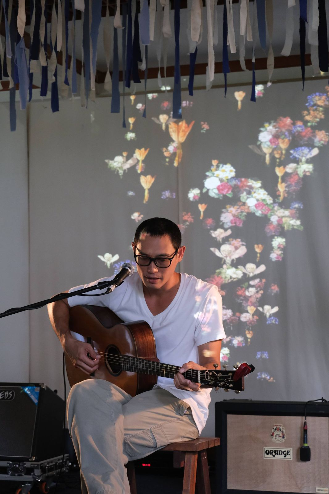

The Legend of Northern Folk: 21 Melodies for the Dreamers - Concert Visual

Year
2021
Role
Creative Technologist
Collaborators
Ploypilin Kasemsook
Audio-reactive visuals for The Legend of Northern Folk: 21 Melodies for the Dreamers, a concert in which Chiang Mai musicians remembered the artist Charun Manopetch. Made with Ploypilin Kasemsook.